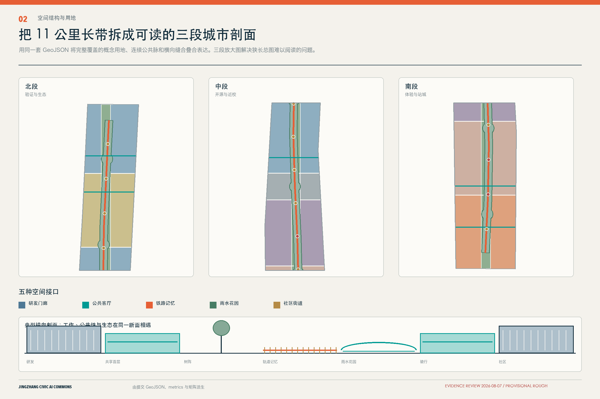
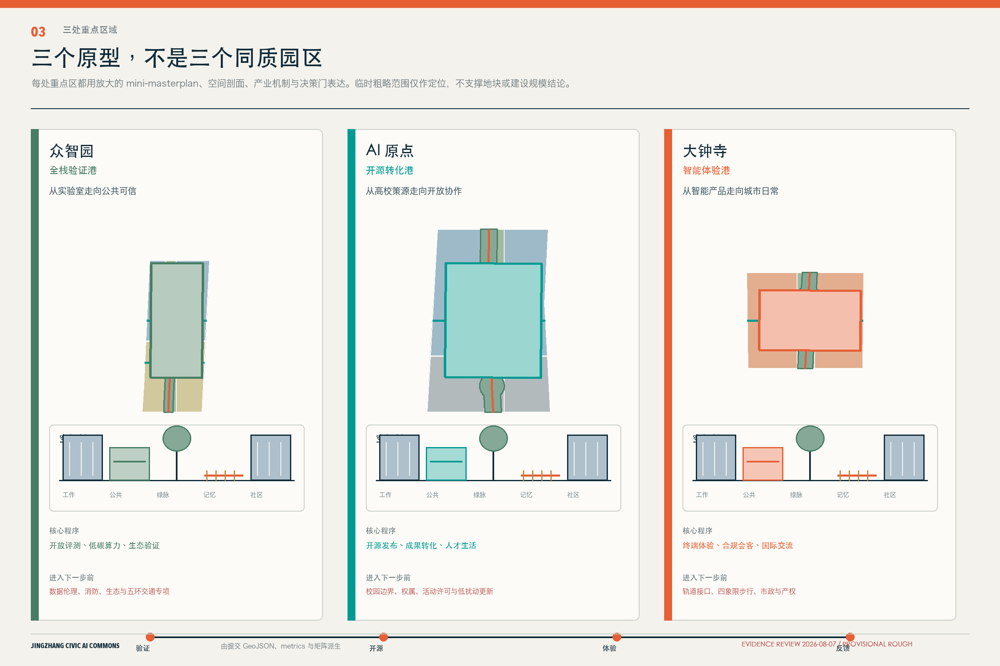
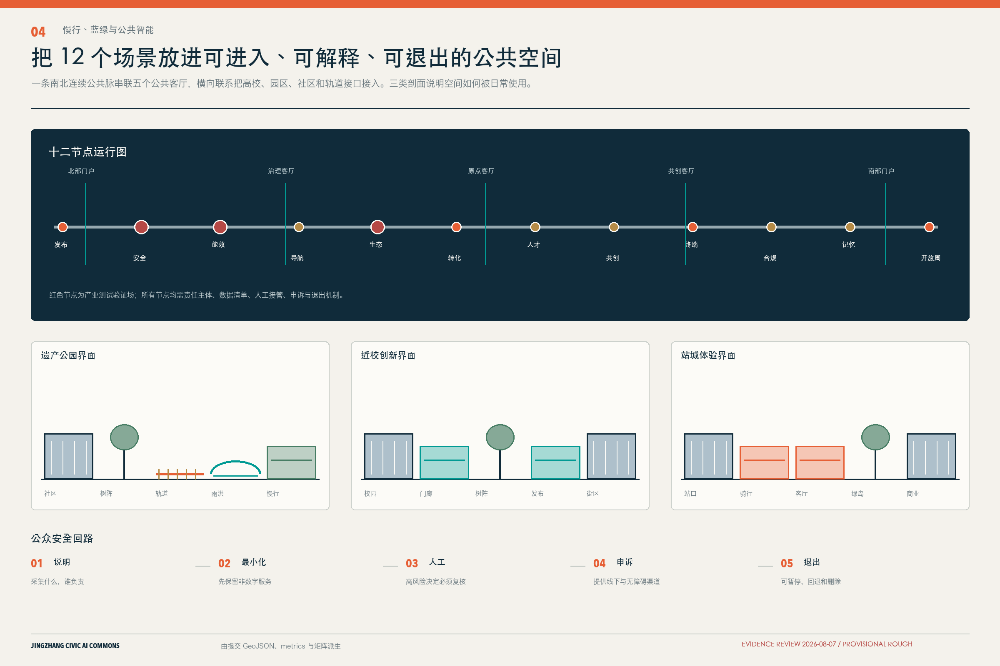

遗址公园一期已建成
不计入方案新增绿地。重点补横向连接、日常运营与公众问责。
三座创新港、五座公共客厅、十二个可审计场景，让 AI 从封闭园区回到可进入、可问责的城市日常。
不是给城市贴上 AI 标签。
是先建立公共规则。
京张遗址公园、清河、小月河与学院路节点不是待填色的空白。设计从既有资产、协同项目、资料冲突和正式核验门开始。
不计入方案新增绿地。重点补横向连接、日常运营与公众问责。
清河、小月河、学院路七节点先衔接水务、交通和维护责任。
早期 37 km² 和“学北园”不进入正式表述，重点区使用公告“众智园”。
文字四至不转画成精确边界，缺图层时只设置专业核验门。
北段讲验证与生态，中段讲开源与近校，南段讲体验与站城。完整总图作为定位，空间判断在放大图与剖面中完成。

空间类型、产业机制、公共界面和进入下一阶段的决策门共同定义每座创新港。
开放评测、低碳算力与生态验证共同构成花园型全栈验证港。
从实验室走向公共可信开源发布、成果转化和人才生活服务形成近校型转化社区。
从高校策源走向开放协作智能终端、数据合规和国际交流进入可步行的城市日常。
从产品走向城市体验总体概念、空间结构、重点区域、慢行蓝绿与证据链各有一个主叙事，不再重复同一张狭长地图。


所有已知指标从 GeoJSON 投影至 EPSG:4548 复算。官方控制条件缺失时继续显示 unknown。
六个案例用于比较运营、公共空间和治理机制。它们不参与京张边界、控规或政府承诺推导。
长期园区运营与工作、生活、公共空间混合。
转译：三港共享服务与日常生活嵌入多机构科研网络与区域公共空间协同。
转译：跨片区知识与慢行联系公共利益、数字治理与阶段问责，同时暴露技术治理争议。
转译：场景测试前置数据与退出规则产业转型、混合功能与公共设施协商。
转译：研发、服务与社区的空间类型知识机构、步行公共空间与社区收益。
转译：近校转化与公众可进入的一层开放科研、人才社区和负责任 AI 文化。
转译：开源荣誉与治理沙盒每一道门都有证据、责任主体、公开材料和停止选项。资料不到位，流程停在当前门，不以年份自动升级。
确认真实公共问题，不让技术自己寻找场景。
许可、数据清单、人工基线和 90 天撤除方案。
隐私、偏差、无障碍、安全、文保与社区收益。
公开使用、投诉、故障、维护和公平性记录。
放大、再次试点、修改、转人工服务或完整退出。
总览地图、三层范围、重点区域、用地分区、建筑、交通慢行、蓝绿公共空间、更新项目、AI 场景和核心指标已形成同源证据链。
官方事实、正式批复、background-only 案例与 provisional geometry 分级使用。
控规、权属、文保 GIS、道路红线和市政容量不由 AI 补造。
格式、空间、视觉、专业证据全部通过后才进入 formal review。
自检只证明可进入评审，不代表工程可行、法定审定或政府承诺。
当前唯一空间边界为仓库 provisional rough polygon。它不是官方红线，也不能用于精确面积、审批或工程判断。